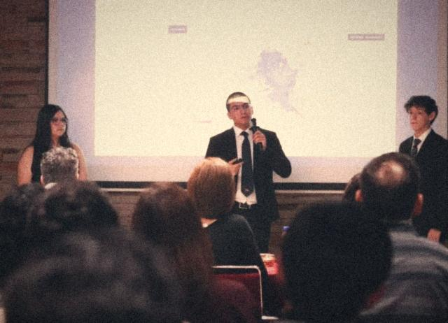
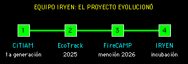

¿Qué es un caso de éxito?
No es solo ganar un premio. Para nosotros, un caso de éxito es un proyecto que siguió creciendo cuando ya nadie lo pedía de tarea: un equipo que aprendió aquí y encontró su camino afuera.
Equipo IRVEN: primera generación

IRVEN es un equipo de la primera generación de CiTIAM Labs. Su proyecto nació en 2025 como EcoTrack y evolucionó hasta convertirse en lo que hoy es IRVEN. En 2026 sus integrantes ganaron una mención honorífica en FireCAMP, de FireLab. Hoy estudian en PrepaTec, y su proyecto se está incubando en Future Founders Academy, en conjunto con el Instituto de Emprendimiento Eugenio Garza Lagüera.

| Parada | Qué pasó |
|---|---|
| CiTIAM Labs | Formaron parte de la primera generación del club. |
| EcoTrack, 2025 | Nace el proyecto: ciencia ciudadana para monitorear riesgos por lluvias en Hermosillo. |
| IRVEN | El proyecto evoluciona hacia la inteligencia energética y territorial. |
| FireCAMP de FireLab, 2026 | Mención honorífica. |
| Hoy | Estudian en PrepaTec y su proyecto se incuba en Future Founders Academy, en conjunto con el Instituto de Emprendimiento Eugenio Garza Lagüera. |
Un ejemplo de perseverancia. Cuando terminó su generación en el club, pudieron haberse detenido. No lo hicieron: su proyecto cambió de nombre y de enfoque, lo llevaron a competir y, ya en la preparatoria, lo siguen desarrollando. Hoy es una plataforma que cualquiera puede visitar.
VISITAR IRVEN.APPDe EcoTrack a IRVEN: un proyecto que cambió de rumbo
IRVEN no apareció de golpe. En 2025 el proyecto se llamaba EcoTrack y hacía otra cosa: una plataforma de ciencia ciudadana para monitorear riesgos por lluvias en Hermosillo, con reportes de la comunidad en un mapa. Después evolucionó.
| Aspecto | EcoTrack (2025) | IRVEN (hoy) |
|---|---|---|
| Tema | Riesgos hidrometeorológicos, como los que provocan las lluvias | Energía, infraestructura y territorio |
| Pregunta | ¿Qué zonas conviene atender primero por riesgo? | ¿Dónde conviene invertir y qué hay que revisar antes? |
| Datos | Reportes ciudadanos con foto, noticias y series de lluvia de la CONAGUA | Fuentes energéticas y climáticas, INEGI y OpenStreetMap |
| Se mantuvo | Hermosillo como punto de partida, los mapas y la idea de cruzar varias capas de información para decidir mejor. | |
Cambiar de rumbo no es rendirse. En los proyectos se le llama pivotar: cambiar el enfoque sin tirar lo que ya aprendiste. Tu primera idea no tiene que ser la definitiva. En ciencia e ingeniería, muchas veces la primera versión sirve para descubrir qué pregunta valía la pena hacerse.
VER ECOTRACKInformación tomada de EcoTrack en noviembre de 2026.
¿Qué hace IRVEN?
Su lema es "Antes de invertir, entiende el territorio". Se presenta como una plataforma de inteligencia energética y territorial, con enfoque inicial en Hermosillo, Sonora.
El problema: imagina que una fábrica quiere instalarse en la ciudad. ¿En qué terreno? Para decidirlo hay que cruzar datos de energía, infraestructura, clima y territorio, y esos datos suelen vivir separados en mapas, documentos y hojas de cálculo.
Su idea: reunir esa información en mapas interactivos para que se puedan comparar las alternativas y saber qué conviene revisar primero.
| Para quién | Qué pregunta ayuda a responder | Qué se obtiene |
|---|---|---|
| Industria: manufactura, maquilas, almacenamiento y parques industriales | ¿Dónde instalarse o ampliarse? | Una preselección de ubicaciones y lo que falta verificar. |
| Gobierno e instituciones: planeación energética, infraestructura y desarrollo urbano | ¿Qué zona atender primero? | Prioridades por zona y un expediente para la revisión técnica. |
Información tomada de irven.app en noviembre de 2026. El proyecto sigue cambiando: consulta su página para ver lo más reciente.
¿Qué significa estar en incubación?
Tener una idea no es lo mismo que tener un proyecto que le sirva a alguien. Future Founders Academy se presenta como un programa de validación temprana para startups: dura 10 semanas, es en línea y ofrece mentoría práctica. Entre sus aliados muestra al Tec de Monterrey (IEEGL). Trabaja en cinco etapas, llamadas sprints:
- Base Camp: definir al cliente y la propuesta.
- Hustle: validar la idea con usuarios reales.
- Forge: construir el producto.
- Close: vender y facturar.
- Raise: prepararse para presentarlo ante posibles inversionistas.
¿Te suena? Se parece al ciclo de ingeniería que usamos en el club: definir el problema, preguntar, construir, probar y mejorar. Lo nuevo es que aquí la prueba final la hacen personas que pueden usar y pagar lo que construiste.
Información tomada de academy.futurefounders.mx en noviembre de 2026.
Lo que podemos aprender de su método
Lo más interesante de IRVEN no es solo el mapa, sino su forma de ser honestos con los datos. Son las mismas reglas que usamos en el club.
- Un dato que falta no vale cero. Su página lo dice así: "un dato ausente no se convierte en cero". Si no mediste algo, escribe que falta; no lo rellenes.
- Separa lo que mediste de lo que calculaste. IRVEN distingue datos observados, cálculos y modelos. En tu cuaderno también puedes hacerlo: una medida no es lo mismo que una estimación.
- Reconoce los límites de tu herramienta. Ellos advierten: "La cercanía a una línea o subestación no confirma capacidad de suministro". Por eso su resultado es una preselección, y la factibilidad eléctrica debe validarla la CFE con las autoridades competentes.
- Sal a preguntarle a quien sabe. Cuentan que las entrevistas con personal de planeación de la CFE orientaron su enfoque. Un buen proyecto no se hace solo frente a la pantalla.
- Empieza cerca de casa. Comenzaron por Hermosillo, un lugar que conocen. Nuestros proyectos también nacen de lo que tenemos alrededor.
Un proyecto, cinco miradas
- Ciencia: distinguir una observación de una estimación.
- Tecnología: reunir datos de distintas fuentes en mapas interactivos.
- Ingeniería: pensar en líneas, subestaciones y consumo de energía.
- Artes: diseñar un mapa que otras personas puedan entender.
- Matemáticas: comparar zonas y escenarios con los mismos criterios.
Reto: piensa como IRVEN
Supongamos que el club quiere poner un semillero en la escuela. ¿Dónde? Compara dos lugares del patio con los mismos criterios, con permiso de tu docente.
| Criterio | Lugar A | Lugar B | ¿Lo medí o lo estimé? |
|---|---|---|---|
| Horas de sol | ¿? | ¿? | ¿? |
| Distancia a una llave de agua | ¿? | ¿? | ¿? |
| Espacio disponible | ¿? | ¿? | ¿? |
Cópiala en tu cuaderno. Si no pudiste medir algo, escribe "falta", no un cero. Al final, no digas "este es el mejor lugar", sino "este lugar merece revisarse primero, y esto es lo que falta verificar".
Palabras nuevas
- Incubar un proyecto
- Acompañar a una idea joven con asesoría y formación para que pueda convertirse en una empresa o una organización.
- Pivotar
- Cambiar el enfoque de un proyecto aprovechando lo que ya aprendiste.
- Ciencia ciudadana
- Investigación en la que personas de la comunidad ayudan a reunir datos.
- Validar una idea
- Comprobar con personas reales que el problema existe y que tu solución les sirve, antes de invertir mucho en construirla.
- Mención honorífica
- Reconocimiento que da un jurado a un trabajo destacado.
- Infraestructura eléctrica
- Líneas, subestaciones y demás instalaciones que llevan la electricidad hasta donde se usa.
- Subestación
- Instalación que cambia el voltaje de la electricidad para poder transportarla o distribuirla.
- Preselección
- Lista corta de opciones que merecen estudiarse mejor. No es la decisión final.
¿Tu proyecto será el siguiente?
La segunda generación del club ya empezó a trabajar, y el siguiente caso podría salir de ahí. Todo empieza con una pregunta. No necesitas tener una gran idea desde el principio: necesitas una pregunta que te importe y las ganas de seguir cuando el primer intento no salga.
- Elige algo de tu comunidad que quieras entender o mejorar.
- Pregúntale a quien lo vive o lo conoce de cerca.
- Construye una primera versión sencilla y pruébala.
- Sigue, aunque ya no sea tarea.